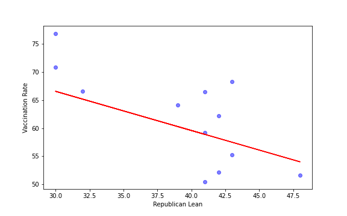
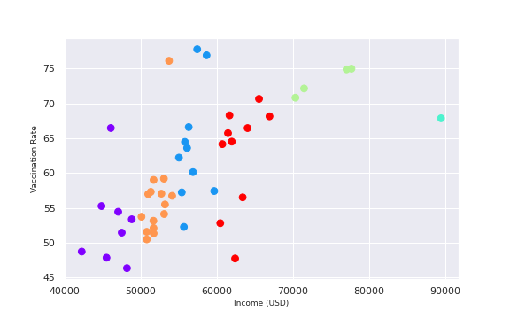

Portfolio
-
Week1: Building a site
Build your multi-page site. Host it on GitHub, with at least two pages: index (your portfolio) and project. Feel free to add more pages (about etc) and make your index and into page. If you do this make a clear portfolio page – this is what we will mark.
This Website is hosted via Github pages
-
Week2: Embedding
Embed three charts, two that are given to you in class. One (as homework) taken from the repository of charts that drive www.rapidcharts.io
Bitcoin long run (Source) -
Week3: Hosting data
IMF Outstanding Credit -
Week3: Hosting data
IMF Outstanding Credit vs World GDP -
Week4
Created this pie chart using Colab, from OWID covid data

# of hospitalizations per country (See in Colab) -
Week5: 9 Graphs from ONS
Compiled these economy related charts to period before and during the COVID-19 pandemic
-
Week6: Reading week
Reading week (no homework)
Week7: Base map and a choropleth
Produce two maps and embed them in your portfolio page. Both should be of the same country, region, area, city.
Vaccination Rate -
Week 8 – Festival of Economics
Produce two charts that support or refute an argument at the Festival of Economics
“ Interest on cryptocurrencies was increased during the lockdown because people were looking for the thrill of betting. ”
There's a slight increase on the trade volumes but it also comes down July 2020 only to come back up again nearing 2021
Bitcoin market cap increased near the end of 2021, that could indicate increased interest by the masses
-
Week 9 - Advance Analytics
Produce two charts that use advanced analytics.
US States: Democrat Lean vs Vaccination RatesUS States: Education Level vs Vaccination Coverage -
Week10-11 Supervised Machine Learning (Part 1)
 A predictive model of vaccination rate based on republican lean on the USA Colab -
Week10-11 Unsupervised Machine Learning (Part 2)
 An unsupervised k-means clustered data of income averages of states vs the vaccination rate Colab